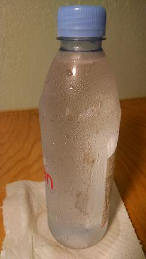

|
Scientists often use models at the microscopic scale to explain observations at the macroscopic scale . Now, we will use a scientific model to study where the water outside of the bottle came from. Scientists use models to represent a system under study, to aid explanation and prediction, and to communicate ideas with others.
Models usually include diagrams, physical representations, mathematical representations, analogies, and computer animations. Very small (need a microscope to observe)
Large enough to be seen without a microscope
|
 |
|
ENGAGE
|